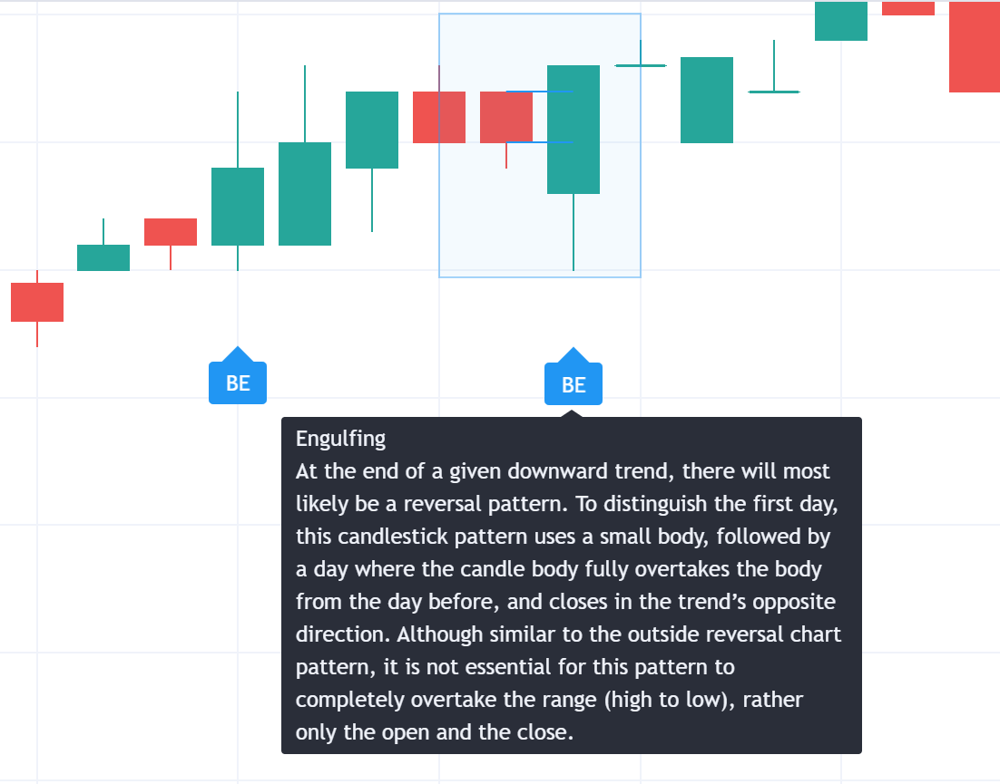

Technical Analysis
Technical analysis is the study of the price of a stock to determine the value of the stock.
Some important concepts:
- The trend is your friend
- Tools chartists that help to identify buy/sell signals
- Indicators for determining buy/sell signals
- Maximize results with money gestion
The trend is your friend
Determine your time frame
First you need to determine your time frame. For selecting how to check the market time frame.
- Scalper: very short term investors (min or hours)
- Short trader: short term investors (hours or days)
- Swing trader: medium term investors (days or weeks)
- Long trader: long term investors (weeks or months)
Once you determinded which type of investor you are, you need to select the time frame for your trend analysis.
- Scalper: look trends (15 or 30 min)
- Short trader: look trends (days)
- Swing trader: look trends (weeks)
- Long trader: look trends (months)
Determine the market trend
Is not only looking to trend lines, what determines the trend is the max and min sequences. Always you can doubt about relevantes max and min, you can use the following rules:
- Looking for a higher time frame and keep the ones that stays in the higher time frame
- Use Fibonacci tools to determine the relevant max and min. If there are not a decrease in price bigger than 61.8% of Fibonacci, then the trend is not over.
Tools chartists that help to identify buy/sell signals
Possible buy/sell signals with Fibonacci
This allow us to determine the possible buy/sell signals that has a good win/loose ratio. You use Fibonacci concatenating the max and min of the trend and once is broken, you can determine the possible buy/sell signals.
- Price at [38% - 50%] of Fibonacci: possible buy/sell signal
- Set the stop loss at [50% - 61.8%] of Fibonacci
Fibonacci works because is a serie very common in the Nature.
Use price action to determine buy/sell signals
Once we determined the down in market, we can use grafic patterns to determine the buy/sell signals.
Bullish patterns:
- Double bottom: is a grafic pattern that indicates that the price is going to go up

- Engulfing bullish: is a grafic pattern that indicates that the price is going to go down 
Bearish patterns:
- Double top: is a grafic pattern that indicates that the price is going to go down
- Kicking bearish: is a grafic pattern that indicates that the price is going to go up
Indicators for determining buy/sell signals
Moving averages
We will use two moving averages:
- Fast moving average: is a moving average that is calculated with a short period of time (50 periods)
- Slow moving average: is a moving average that is calculated with a long period of time (150 periods)
We will wait until the price cross the moving averages to determine the buy/sell signals.
Applying oscillators
Using RSI (Relative Strength Index) we can determine the buy/sell signals. If we are in a up trend, we will wait until the RSI is in the oversold zone (40%) and we will consider buying when cut the RSI mean line in the up direction. If we are in down trend, we will wait until the RSI is in the overbought zone (60%) and we will consider selling when cut the RSI mean line in the down direction.
The stop loss we set it at the last min of the trend.
Maximize results with money gestion
Importance of stop loss
The stop loss is the most important tool for maximizing the results. It allows us to minimize the losses and maximize the profits.